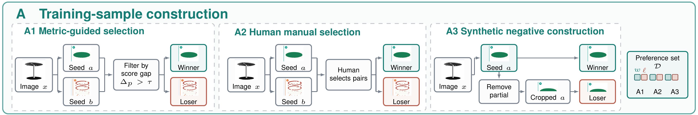
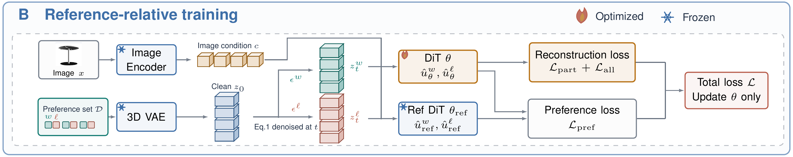
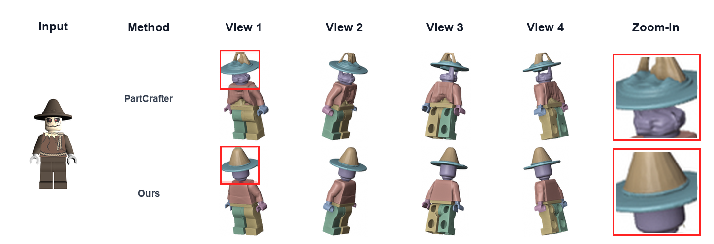
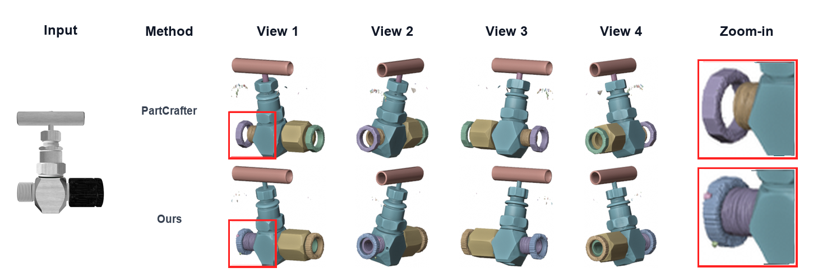
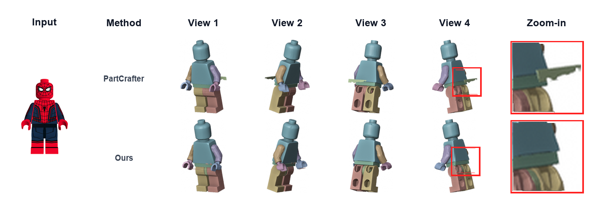
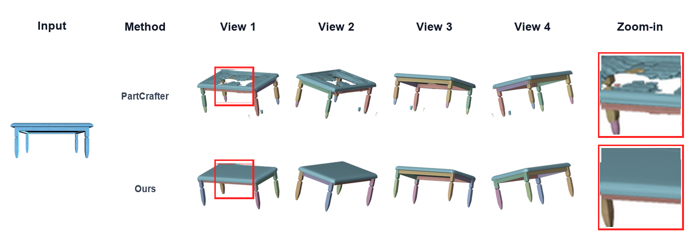
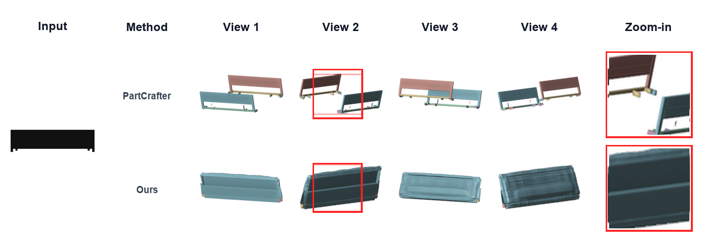
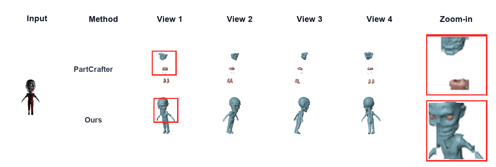
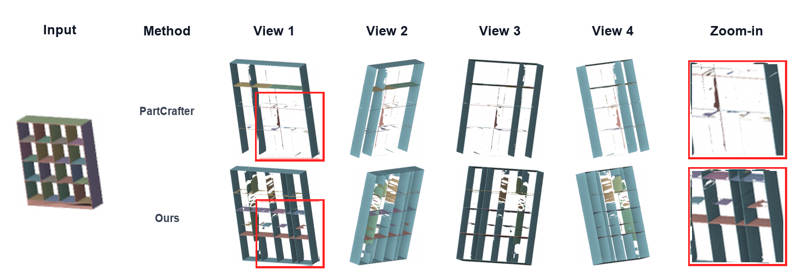
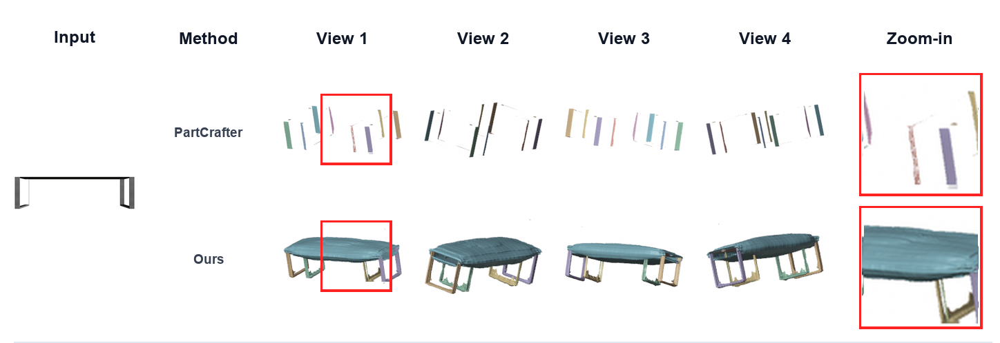

Loading the 3D gallery…
One colour per part. Interact to rotate and zoom; Parts to explore components. Simplified web meshes; paper renders below.
Abstract
Part-aware 3D generation requires complete, well-separated semantic parts, not only globally plausible objects. Yet high-quality part annotations are scarce. We study whether DPO-style preference post-training can adapt a pretrained generator with limited part-annotated data and no architectural changes.
Each primary training example pairs two ordered noise realizations for the same ground-truth (GT) compositional latent. A reference-relative, target-part preference loss compares their flow errors, alongside target-part and all-part reconstruction losses. Only the diffusion transformer (DiT) is updated; the image encoder and 3D VAE stay frozen.
The strongest held-out Objaverse setting uses 363 target-part pairs from 50 objects, increasing matched-part F-score from 0.55 to 0.57 over pretrained PartCrafter and direct supervised fine-tuning. Gains depend on pair construction, target-part coverage and loss weighting, and are less consistent under distribution shift.
Method
Why preference optimization?
- Whole-object plausibility is not enough. A plausible object can still contain missing or fused parts. We focus supervision on one target part.
- Use relative preferences. With scarce annotations, ordered pairs add a reference-relative learning signal to standard reconstruction. DPO does this without training a separate reward model.
- Keep absolute geometry supervision. PartDPO uses offline pairs, not an online reward-maximization loop. GT flow-matching losses anchor both the target part and the full object.
(A) Offline training-sample construction
- Metric-guided (primary): rank seed-generated candidates by GT target-part quality; store the winner/loser seeds.
- Human-ranked control: order seeds through visual comparison.
- Synthetic-crop control: remove loser target geometry before VAE encoding.
Swipe the diagrams horizontally to see each stage.

(B) Reference-relative training
The primary pair shares one clean GT latent and one timestep, but uses two different seeded noise tensors. We compare target-part flow errors against a frozen reference and fine-tune only the DiT.

Target-block objective and loss terms
For each trajectory , the trainable and reference DiTs receive the same noised latent, timestep and image condition. We measure their flow-matching error only on the tokens of target block and take the reduction relative to the frozen reference:
Minimizing the pair loss increases : relative to the frozen reference, the trainable DiT is encouraged to reduce target-part error more on the winner trajectory than on the loser trajectory. This is a pairwise objective; it does not by itself require the loser error to decrease. After a reconstruction-only warm-up, training uses
where and are GT flow-matching losses on the winner trajectory, for the target block and for every part block. They supply absolute GT supervision; the frozen reference appears only in the pairwise term.
Results
Interactive 3D comparison
Drag either model to rotate both. Scroll or pinch to zoom.
Simplified web meshes; see the paper renders below for fine details. Part colours are independent across methods.
Multi-view comparisons
Same input and part count. PartCrafter (top), Ours (bottom). Red boxes mark the enlarged details.
Scroll or swipe to explore; select an image to enlarge.
















Pretrained · direct SFT · PartDPO
Part-aware generation on held-out inputs
On Objaverse multi-part inputs, the large setting improves all four metrics over pretrained PartCrafter and direct SFT. Switch datasets for ABO and ShapeNet.
CD ↓ lower is better · FS ↑ higher is better. Tinted columns report matched-part quality.
Wide tables can be swiped horizontally.
Objaverse
| Setting | Obj-CD ↓ | Obj-FS ↑ | Part-CD ↓ | Part-FS ↑ |
|---|---|---|---|---|
| Pretrained | 0.2724 | 0.5680 | 0.2875 | 0.5453 |
| SFT | 0.2667 | 0.5751 | 0.2852 | 0.5509 |
| Ours | 0.2625 | 0.5881 | 0.2716 | 0.5707 |
Every part-count group
| Setting | Obj-CD ↓ | Obj-FS ↑ | Part-CD ↓ | Part-FS ↑ |
|---|---|---|---|---|
| 1 part · Pretrained | 0.2382 | 0.6366 | 0.2096 | 0.6949 |
| 1 part · SFT | 0.2243 | 0.6441 | 0.1890 | 0.7273 |
| 1 part · Ours | 0.2184 | 0.6603 | 0.2044 | 0.7020 |
| 2–4 parts · Pretrained | 0.2631 | 0.5909 | 0.2574 | 0.5986 |
| 2–4 parts · SFT | 0.2568 | 0.5945 | 0.2620 | 0.5955 |
| 2–4 parts · Ours | 0.2491 | 0.6121 | 0.2485 | 0.6237 |
| 5–8 parts · Pretrained | 0.2865 | 0.5332 | 0.3333 | 0.4646 |
| 5–8 parts · SFT | 0.2813 | 0.5463 | 0.3197 | 0.4846 |
| 5–8 parts · Ours | 0.2824 | 0.5520 | 0.3062 | 0.4912 |
| 2–8 avg. · Pretrained | 0.2724 | 0.5680 | 0.2875 | 0.5453 |
| 2–8 avg. · SFT | 0.2667 | 0.5751 | 0.2852 | 0.5509 |
| 2–8 avg. · Ours | 0.2625 | 0.5881 | 0.2716 | 0.5707 |
ABO
| Setting | Obj-CD ↓ | Obj-FS ↑ | Part-CD ↓ | Part-FS ↑ |
|---|---|---|---|---|
| Pretrained | 0.1520 | 0.7806 | 0.3204 | 0.4888 |
| SFT | 0.1409 | 0.8087 | 0.3062 | 0.4889 |
| Ours | 0.1382 | 0.8072 | 0.3215 | 0.4729 |
Every part-count group
| Setting | Obj-CD ↓ | Obj-FS ↑ | Part-CD ↓ | Part-FS ↑ |
|---|---|---|---|---|
| 1 part · Pretrained | 0.0978 | 0.8998 | 0.0975 | 0.9007 |
| 1 part · SFT | 0.0991 | 0.9066 | 0.1043 | 0.8935 |
| 1 part · Ours | 0.1007 | 0.8883 | 0.1015 | 0.8898 |
| 2–4 parts · Pretrained | 0.1520 | 0.7806 | 0.3204 | 0.4888 |
| 2–4 parts · SFT | 0.1409 | 0.8087 | 0.3062 | 0.4889 |
| 2–4 parts · Ours | 0.1382 | 0.8072 | 0.3215 | 0.4729 |
| 5–8 parts · Pretrained | — | — | — | — |
| 5–8 parts · SFT | — | — | — | — |
| 5–8 parts · Ours | — | — | — | — |
| 2–8 avg. · Pretrained | 0.1520 | 0.7806 | 0.3204 | 0.4888 |
| 2–8 avg. · SFT | 0.1409 | 0.8087 | 0.3062 | 0.4889 |
| 2–8 avg. · Ours | 0.1382 | 0.8072 | 0.3215 | 0.4729 |
ShapeNet
| Setting | Obj-CD ↓ | Obj-FS ↑ | Part-CD ↓ | Part-FS ↑ |
|---|---|---|---|---|
| Pretrained | 0.1814 | 0.7130 | 0.3262 | 0.4457 |
| SFT | 0.1751 | 0.7269 | 0.3270 | 0.4430 |
| Ours | 0.1833 | 0.7118 | 0.3344 | 0.4396 |
Every part-count group
| Setting | Obj-CD ↓ | Obj-FS ↑ | Part-CD ↓ | Part-FS ↑ |
|---|---|---|---|---|
| 1 part · Pretrained | 0.2092 | 0.6626 | 0.2094 | 0.6632 |
| 1 part · SFT | 0.2162 | 0.6411 | 0.2161 | 0.6401 |
| 1 part · Ours | 0.2276 | 0.6147 | 0.2294 | 0.6000 |
| 2–4 parts · Pretrained | 0.1828 | 0.7107 | 0.3115 | 0.4689 |
| 2–4 parts · SFT | 0.1807 | 0.7178 | 0.3099 | 0.4748 |
| 2–4 parts · Ours | 0.1816 | 0.7179 | 0.3199 | 0.4712 |
| 5–8 parts · Pretrained | 0.1795 | 0.7160 | 0.3456 | 0.4149 |
| 5–8 parts · SFT | 0.1677 | 0.7391 | 0.3497 | 0.4006 |
| 5–8 parts · Ours | 0.1854 | 0.7037 | 0.3537 | 0.3975 |
| 2–8 avg. · Pretrained | 0.1814 | 0.7130 | 0.3262 | 0.4457 |
| 2–8 avg. · SFT | 0.1751 | 0.7269 | 0.3270 | 0.4430 |
| 2–8 avg. · Ours | 0.1833 | 0.7118 | 0.3344 | 0.4396 |
Ours: large continuation setting, 796 pairs / 140 objects. SFT: 140 GT objects, standard flow matching. This is a system-level comparison, not a single-factor ablation. Shared held-out lists exclude all fine-tuning objects.
Matched objective control
What does the pairwise loss contribute?
Change only the pairwise term. The large-setting control keeps the training examples, initialization, stored seeds, reconstruction terms, optimizer and schedule fixed. Reconstruction alone does not reproduce the full-objective result.
Original values from the supplementary matched-objective control, 200 Objaverse multi-part inputs. The full objective improves all four metrics over reconstruction-only.
All metrics and both matched controls (paper Table 4)
| Setting | Obj-CD ↓ | Obj-FS ↑ | Part-CD ↓ | Part-FS ↑ |
|---|---|---|---|---|
| F1 Pretrained | 0.2724 | 0.5680 | 0.2875 | 0.5453 |
| F2 Medium, recon. | 0.2650 | 0.5179 | 0.3001 | 0.4552 |
| F3 Medium, full | 0.1941 | 0.7036 | 0.2624 | 0.5488 |
| F4 Large, recon. | 0.2819 | 0.4878 | 0.3328 | 0.4061 |
| F5 Large, full | 0.2625 | 0.5881 | 0.2716 | 0.5707 |
Medium F2/F3 and large F4/F5 are separate matched comparisons. F3 and medium B2 are separate evaluation runs; their values are not interchanged.
Scale · ordering source · perturbation
The preference pairs matter
- Focused supervision. The medium setting (363 pairs) gives the strongest Objaverse matched-part values in the metric-guided group: CD 0.2542 and FS 0.5725.
- Comparison quality. Seven screened human-ranked pairs improve all four Objaverse metrics over pretrained; the larger 41-pair set does not.
- Pair ordering. Reversing labels or substituting randomly ordered seeds reduces Objaverse matched-part quality relative to the original large setting.
Full pair-construction results on all three datasets
Metric-guided and human-ranked pairs use the same clean GT latent with two seeded noise tensors. Synthetic cropping changes rejected target geometry. Random replacement keeps the number of training examples fixed, as specified in the supplementary material.
Objaverse
| Setting | Obj-CD ↓ | Obj-FS ↑ | Part-CD ↓ | Part-FS ↑ |
|---|---|---|---|---|
| Pretrained | 0.2724 | 0.5680 | 0.2875 | 0.5453 |
| Metric · 7 objects / 56 pairs | 0.2626 | 0.5328 | 0.3157 | 0.4545 |
| Metric · 50 objects / 363 pairs | 0.1986 | 0.6958 | 0.2542 | 0.5725 |
| Metric · 140 objects / 796 pairs | 0.2625 | 0.5881 | 0.2716 | 0.5707 |
| Human-ranked · 41 pairs | 0.5127 | 0.1745 | 0.5616 | 0.1285 |
| Human-ranked · 7 pairs | 0.2603 | 0.5854 | 0.2805 | 0.5573 |
| Synthetic crop · 30% | 0.3529 | 0.4127 | 0.3821 | 0.3398 |
| Synthetic crop · 50% | 0.3636 | 0.3721 | 0.4222 | 0.2836 |
| Labels reversed · 10% | 0.3848 | 0.3238 | 0.4336 | 0.2690 |
| Labels reversed · 30% | 0.3628 | 0.3709 | 0.4267 | 0.2858 |
| Labels reversed · 50% | 0.3738 | 0.3487 | 0.4480 | 0.2579 |
| Random replacement · 10% | 0.2461 | 0.5330 | 0.3122 | 0.4319 |
| Random replacement · 30% | 0.3542 | 0.3554 | 0.4398 | 0.2364 |
| Random replacement · 50% | 0.3635 | 0.3797 | 0.4009 | 0.3043 |
ABO
| Setting | Obj-CD ↓ | Obj-FS ↑ | Part-CD ↓ | Part-FS ↑ |
|---|---|---|---|---|
| Pretrained | 0.1520 | 0.7806 | 0.3204 | 0.4888 |
| Metric · 7 objects / 56 pairs | 0.3000 | 0.4528 | 0.3722 | 0.3437 |
| Metric · 50 objects / 363 pairs | 0.2233 | 0.6560 | 0.3104 | 0.4707 |
| Metric · 140 objects / 796 pairs | 0.1382 | 0.8072 | 0.3215 | 0.4729 |
| Human-ranked · 41 pairs | 0.4440 | 0.2215 | 0.5293 | 0.1531 |
| Human-ranked · 7 pairs | 0.1400 | 0.8021 | 0.3096 | 0.5006 |
| Synthetic crop · 30% | 0.3319 | 0.4355 | 0.4145 | 0.3072 |
| Synthetic crop · 50% | 0.3610 | 0.3950 | 0.4280 | 0.2945 |
| Labels reversed · 10% | 0.3678 | 0.3957 | 0.4562 | 0.2672 |
| Labels reversed · 30% | 0.4026 | 0.3161 | 0.4783 | 0.2384 |
| Labels reversed · 50% | 0.3996 | 0.3247 | 0.4822 | 0.2192 |
| Random replacement · 10% | 0.2267 | 0.6041 | 0.3287 | 0.4440 |
| Random replacement · 30% | 0.3549 | 0.2719 | 0.5075 | 0.1812 |
| Random replacement · 50% | 0.3147 | 0.3820 | 0.4057 | 0.2755 |
ShapeNet
| Setting | Obj-CD ↓ | Obj-FS ↑ | Part-CD ↓ | Part-FS ↑ |
|---|---|---|---|---|
| Pretrained | 0.1814 | 0.7130 | 0.3262 | 0.4457 |
| Metric · 7 objects / 56 pairs | 0.2843 | 0.4442 | 0.3612 | 0.3500 |
| Metric · 50 objects / 363 pairs | 0.2099 | 0.6500 | 0.2872 | 0.4688 |
| Metric · 140 objects / 796 pairs | 0.1833 | 0.7118 | 0.3344 | 0.4396 |
| Human-ranked · 41 pairs | 0.4942 | 0.1579 | 0.5557 | 0.1284 |
| Human-ranked · 7 pairs | 0.1725 | 0.7386 | 0.3267 | 0.4493 |
| Synthetic crop · 30% | 0.3681 | 0.3531 | 0.4490 | 0.2541 |
| Synthetic crop · 50% | 0.3514 | 0.3717 | 0.4346 | 0.2631 |
| Labels reversed · 10% | 0.3722 | 0.3478 | 0.4289 | 0.2645 |
| Labels reversed · 30% | 0.3804 | 0.3102 | 0.4560 | 0.2434 |
| Labels reversed · 50% | 0.3833 | 0.3178 | 0.4650 | 0.2194 |
| Random replacement · 10% | 0.2432 | 0.5240 | 0.3227 | 0.3975 |
| Random replacement · 30% | 0.3982 | 0.2512 | 0.5219 | 0.1458 |
| Random replacement · 50% | 0.4225 | 0.2552 | 0.4958 | 0.1892 |
Poster
BibTeX
@inproceedings{qin2026targetpart,
title = {Target-Part Preference Optimization for Part-Aware 3D Generation},
author = {Qin, Zishan and Li, Rui and Zhang, Zeyu and
Kandanaarachchi, Sevvandi and Yao, Lina and Gong, Dong},
booktitle = {Digital Image Computing: Techniques and Applications (DICTA)},
year = {2026}
}